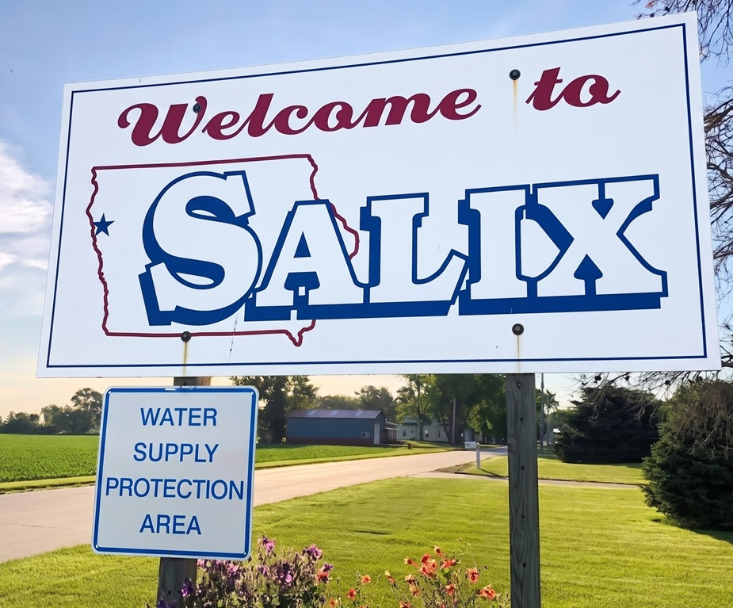
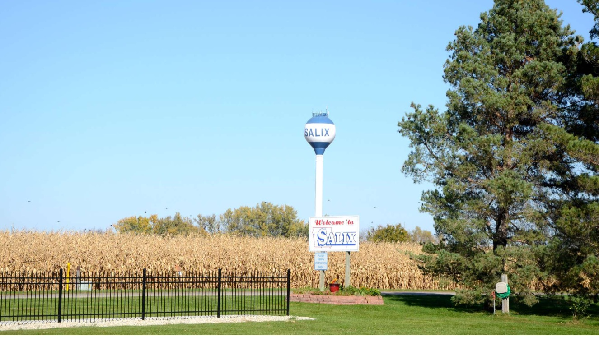

Salix City Council Meeting (October 14, 2026) • Closed Caption Video Archive
Salix, Iowa Data Center

Salix Deserves Guarantees, Not Tacit Assurances
Siouxland deserves transparency, clean water, no noise, and fair benefits and wages.
The proposed 900-acre data center threatens to heavily drain the very same local water supply we are supposed to protect.
The Salix data center is a proposed technology infrastructure project slated for 900 acres of annexed farmland just south of Sioux City, Iowa. The development has become a focal point of community discussion regarding land use, resource allocation, and the local impact of the artificial intelligence boom.
Project Specifications
📍 Location & Scale
Located in Salix, Iowa (Woodbury County). The footprint covers 900 acres of recently annexed agricultural land.
🤝 Key Partners
Partners include MidAmerican Energy and Google, who has been identified as the potential primary customer.
🚧 Current Phase
While the land was voluntarily annexed by the city, the legality of that annexation is currently pending a formal judicial review in district court. To date, no formal rezoning discussions have occurred, and no development applications have been filed.
Recent Updates & Community Response
On August 20, 2026, the Salix City Council voted 3-2 against a proposed one-year moratorium on data center developments. Proponents of the moratorium requested a pause to thoroughly study the potential strain on electricity, water, and local infrastructure.
While some local leaders emphasize the necessity of opening conversations with potential developers to see what economic benefits might be brought to the community, Woodbury County has filed a legal challenge against the city's initial land annexation. No construction can move forward until the rezoning process is fully finalized.

In Salix, our water, our farmland, and our way of life are deeply intertwined.